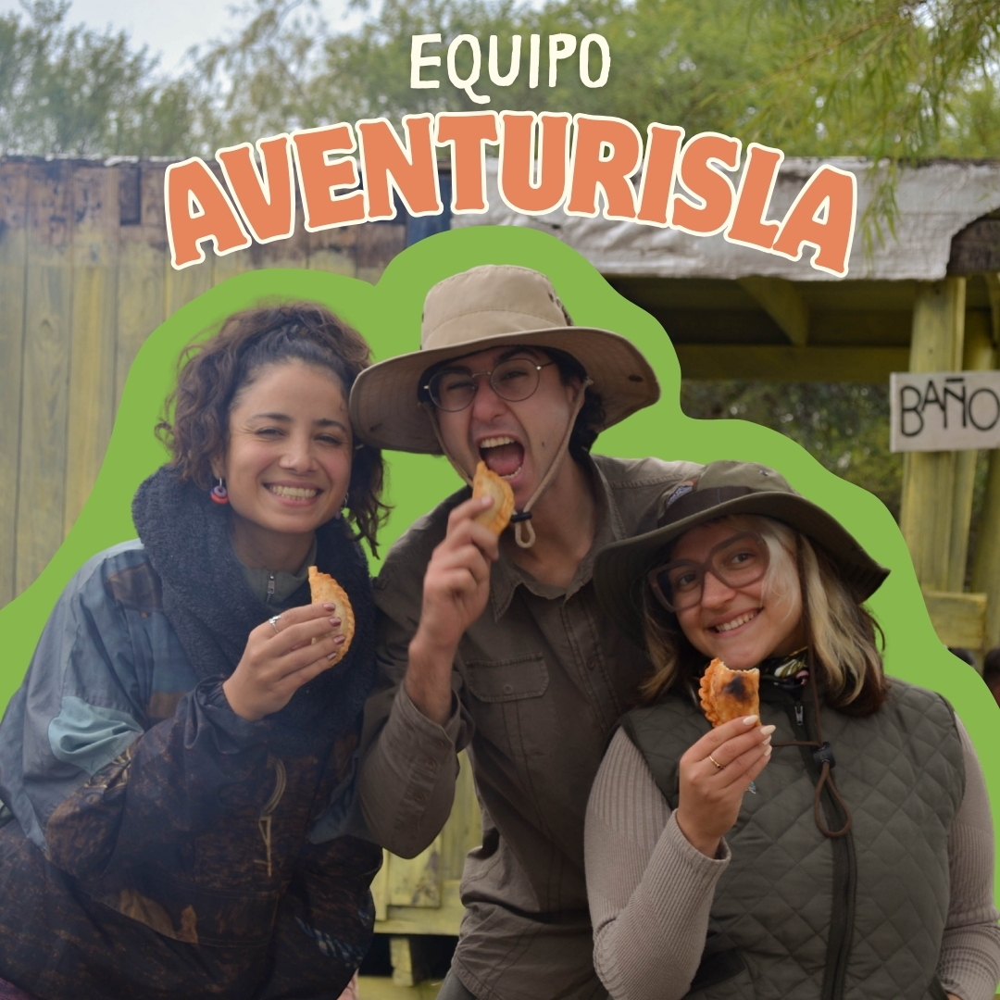

Con el objetivo de acercar a las personas al humedal de manera responsable, sostenible y regular, diseñamos y realizamos excursiones ambientales, educativas y recreativas guiadas por el delta del río Paraná, orientadas a fomentar el cuidado y la valoración del ambiente.
Las propuestas están dirigidas a personas e instituciones interesadas en aprender sobre la naturaleza, la geografía, las problemáticas socioambientales, la historia y la cultura del humedal, tanto del ámbito local como de turistas nacionales e internacionales.
Ofrecemos experiencias personalizadas que integran senderismo interpretativo y navegación guiada, articulando con actores locales y saberes del territorio. Cada experiencia es planificada en detalle, con tiempos definidos y dinámicas recreativas, priorizando siempre la seguridad y el bienestar de los participantes.